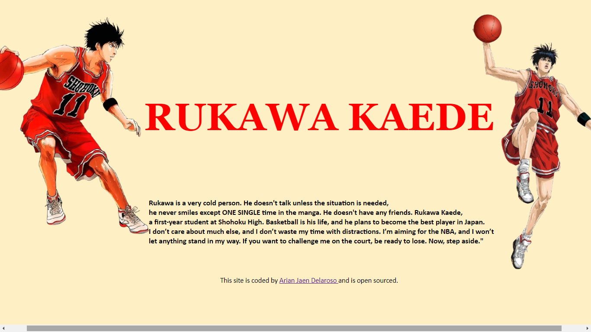
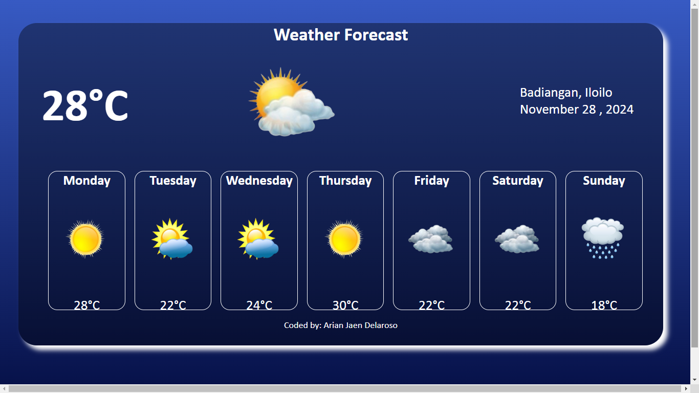
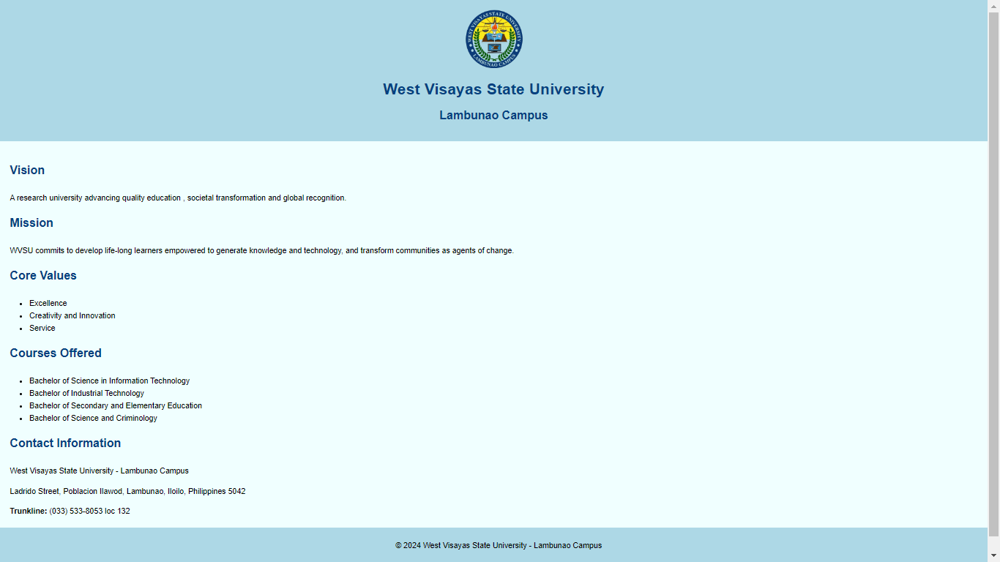

Here, I showcase the projects and accomplishment that define my work.
This website is the anime character Rukawa, it was both challenging and rewarding. It allowed me to merge creativity with technology, resulting in a platform that I’m proud to share. This project is just the beginning of a journey filled with learning, growth, and innovation.
RUKAWA The process of building my own personal website is both exciting and challenging, as it involves careful planning, design, and content creation. In this essay, I will outline the key steps I took to create my personal website and discuss the significance of each phase.
WEATHER Creating a weather app has been an exciting project that allowed me to combine my interests in technology, design, and user experience. The goal of this app is to provide users with real-time weather information, including temperature, forecasts, and other key data, all in an intuitive and visually appealing interface. Below, I will describe the steps I took to build my weather app, from planning to implementation.